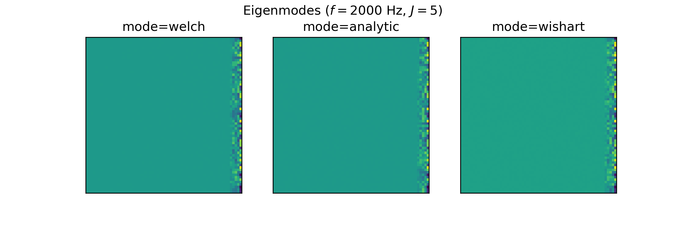
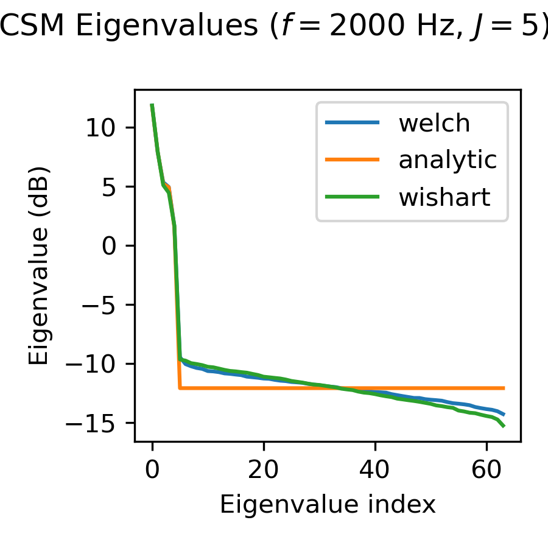
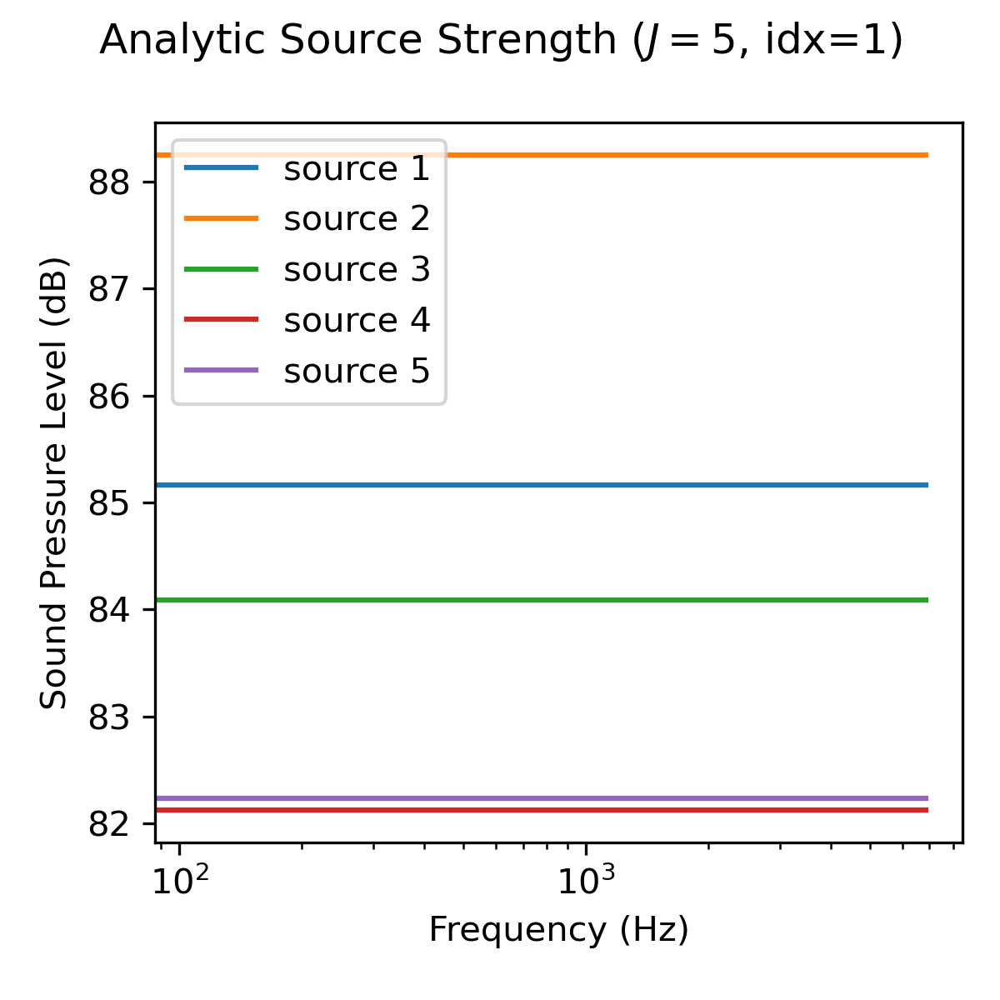

Features
By specifying the desired features, only the necessary data is stored. This allows the user to create datasets of manageable size that are portable and facilitate reproducible research. Depending on the users choice, the dataset comprises different features, explained the following.
Notation
Regarding the mathematical notation in this section, the following conventions are used:
Boldface type for vectors and matrices, e.g., \(\mathbf{p}\) represents a vector, while \(\mathbf{H}\) denotes a matrix
Blackboard Bold is used to indicate number spaces, e.g., \(\mathbb{C}\) represents the complex number space
Microphone array sound pressure signals ('time_data')
The time_data feature comprises the sound pressure signals \(p(t,\mathbf{r}_m)\) at each microphone position \(\mathbf{r}_m\).
The data is stored in a Numpy array of shape (N,M), where N is the number of samples and M is the number of microphones.
The size of N depends on the signal length signal_length and the sampling frequency fs, which can both be set when creating a dataset e.g. with:
dataset = DatasetSynthetic(signal_length=1.0,fs=16000)
Note
The time_data feature is only available if the choosen calculation mode is mode="welch". Otherwise, the time data is not simulated and can therefore not be used as a feature.
Microphone array spectrograms ('spectrogram')
The spectrogram feature comprises the complex-valued spectra \(P(f,\mathbf{r}_m)\) of the microphone signals \(p(t,\mathbf{r}_m)\) for several time data blocks. The data is stored in a Numpy array of shape (B,F,M), where B is the number of time data blocks, M is the number of microphones and F is the number of frequency bins.
The number of time data blocks depends on the signal length signal_length, FFT parameters and the sampling frequency fs, which can all be set when creating a dataset e.g. with:
dataset = DatasetSynthetic(signal_length=1.0,fs=16000)
dataset.config.fft_params['block_size'] = 512
dataset.config.fft_params['overlap'] = '50%''
Note
The spectrogram feature is only available if the choosen calculation mode is mode="welch". Otherwise, the underlying time data from which the spectra are calculated is missing.
Cross-spectral matrix ('csm')
The csm feature corresponds to the cross-spectral matrix (CSM) \(\mathbf{C}(f)\), which contains the auto-power and cross-power spectra of all sensors and is a complex-valued Hermitian matrix. The data is stored in a Numpy array of shape (F,M,M), where M is the number of microphones and F is the number of frequency bins. AcouPipe provides three different modes (analytic, welch and wishart) to obtain the CSM. The default mode is welch. A different mode can be set when creating a dataset e.g. with:
dataset = DatasetSynthetic(mode='analytic')
The representations only slightly differ, depending on the choosen CSM calculation mode (analytic, welch or wishart), as can be seen for the following example extracted from DatasetSynthetic:
{kind=link}
estimated CSM from time data (mode="welch")
Given \(M\) spatially distributed receivers, \(J\) uncorrelated and spatially stationary sources, and a linear propagation model, the complex sound pressure at the \(m\)-th sensor is described by:
Here, \(\omega\) is the angular frequency, \(h_{mj}\) is the transfer function, and \(q(\mathbf{r}_{j}, \omega)\) represents the complex-valued amplitude of the source. Independent noise is modeled as \(n(\boldsymbol{r}_{m}, \omega)\). In practice, the CSM is estimated from a finite number of samples. One common method for estimating the CSM utilized by AcouPipe is Welch’s method:
To obtain the CSM with Welch’s method requires to simulate the underlying microphone signals, which is computationally expensive. On the other hand it is the most realistic method to obtain the CSM.
analytic CSM (mode="analytic")
The propagation equation can also be written in matrix form:
with \(\mathbf{p} \in \mathbb{C}^{M}\), \(\mathbf{q} \in \mathbb{C}^{J}\), \(\mathbf{n} \in \mathbb{C}^{M}\), and \(\mathbf{H} \in \mathbb{C}^{M\times J}\)
If the matrix \(\mathbb{E}[\mathbf{q} \mathbf{q}^{\text{H}}] = \mathbf{Q} \in \mathbb{C}^{J \times J}\) containing the sources’ auto- and cross-power spectra and the transfer matrix \(\mathbf{H} \in \mathbb{C}^{M \times J}\) are known, the CSM can be calculated analytically as:
where \(\mathbb{E}[\cdot]\) denotes the expectation operator. This enables a fast calculation of the CSM but neglects uncertainties that stem from a limited number of snapshots.
Wishart-distributed CSM (mode="wishart")
By assuming stationary sources with non-deterministic source signals, a snapshot deficient CSM can be sampled. Given the matrix \(\mathbf{Q}\), it is possible to approximate \(\mathbf{Q}\) using the Cholesky decomposition \(\mathbf{Q}(\omega) = \mathbf{U}\mathbf{U}^{\mathsf{H}}\) and the Bartlett decomposition:
Here, \(\mathbf{A}\) is generated for \(n\) different degrees of freedom, representing the number of snapshots. The distribution of \(\mathbf{A}\) follows a complex Wishart distribution \(\mathcal{W}_{\mathbb{C}} (n,\mathrm{I})\).
Sampling the cross-spectral matrix is then achieved by multiplying the Wishart-distributed source matrix with the transfer matrix \(\mathbf{H}\):
This method is computationally efficient and allows to sample the CSM for a varying number of snapshots with the same computational burden as with a single snapshot. However, the Wishart-distributed CSM is only an approximation of a snapshot deficient CSM.
Compressed Cross-spectral matrix ('csmtriu')
The CSM is a complex Hermitian matrix and contains redundant information. By using features=['csmtriu'], only the upper triangular part of the CSM is returned (the conjugate complex of the CSM is neglected; see [CGF+21]). The data is stored in a real-valued Numpy array of shape (F,M,M), where M is the number of microphones and F is the number of frequency bins. Similarly as for the csm feature, the representation depends on the choosen mode (analytic, welch or wishart).
The representations only slightly differ, depending on the choosen CSM calculation mode (analytic, welch or wishart), as can be seen for the following example extracted from DatasetSynthetic:
{kind=link}
Eigenmodes of the CSM ('eigmode')
The Eigenmodes of the cross-spectral matrix are the eigenvectors scaled by their corresponding eigenvalues and have been used in [KS22] as input features for source characterization.
{kind=link}
Eigen-decomposition is used to decompose the CSM into its eigenvalues and eigenvectors:
Here, \(\mathbf{V}\) contains the complex eigenvectors, and \(\mathbf{\Lambda}\) is a diagonal matrix of eigenvalues.
The exact representation depends on the choosen CSM calculation mode (analytic, welch or wishart).
As can be observed from the Eigenspectrum of the CSM, the choice of the CSM calculation mode has an impact on the feature representation, in particular the scaling of the eigenmodes.
{kind=link}
Sourcemap ('sourcemap')
The conventional beamforming map is calculated by processing the CSM with the corresponding steering vector \(h\), such that
The equation is evaluated for a spatial grid.
The conventional beamforming map is a feature with AcouPipe when the features attribute is set to features=['sourcemap'].
For convenience, the sound radiation is assumed to come from a monopole.
Different steering vector formulations exist in the literature, varying in terms of spatial precision and accuracy in determining the source strength.
Formulation III according to [Sar12] is used as the default, which is defined as:
Here, \(r_{t, m}\) refers to the distance between the steered location and the respective \(m\)-th sensor, while \(r_{t, 0}\) specifies the distance from the focus point to the reference point where the sound pressure is evaluated. Sarradj demonstrated that using formulation III, the maximum sound pressure level depicted in a sound map may not precisely correspond to the true position of a single sound source. However, the study also revealed that the maximum does equal the true source strength for larger Helmholtz numbers.
The representation slightly differs, depending on the choosen CSM calculation mode (analytic, welch or wishart), as can be seen for the following example extracted from DatasetSynthetic:
{kind=link}
Target Sourcemap ('targetmap_analytic', 'targetmap_estimated')
The target sourcemap provides a sparse mapping of the true source strength on a pre-defined grid. The mapped strength can be either the analytic source strength ('targetmap_analytic') or an estimate of the source strength ('targetmap_estimated'). The representation slightly differs as can be seen for the following example extracted from DatasetSynthetic:
{kind=link}
The underlying grid is defined by the dataset.config.grid attribute of the dataset. Since the true locations of the sources do not necessarily coincide with the grid points, the source strength is attributed to the closest grid points when generating the targetmap. If it is desired to only sample source locations that coincide with the grid points, the attribute dataset.snap_to_grid can be set to True when creating the dataset e.g. with:
dataset = DatasetSynthetic(snap_to_grid=True)
Analytic source strength ('source_strength_analytic')
The analytic source strength refers to the expectation value (infinite number of snapshots) of the squared sound pressure amplitude \(\mathbb{E}[p^2_j(\mathbf{r}_0,f)]\) with respect to a reference position \(\mathbf{r}_0\). The data is stored in a Numpy array of shape (F,J), where F is the number of frequency bins and J is the number of sources. The reference position \(\mathbf{r}_0\) is set to the microphone closest to the origin of the coordinate system by default.
{kind=link}
Estimated source strength ('source_strength_estimated')
The estimated source strength is the block-wise averaged squared sound pressure amplitude \(1/B p^2_j(\mathbf{r}_0,f)\) with respect to a reference position \(\mathbf{r}_0\), where B is the number of time data blocks. The data is stored in a Numpy array of shape (F,J) with F beeing the number of frequency bins and J is the number of sources. The reference position \(\mathbf{r}_0\) is set to the microphone closest to the origin of the coordinate system by default.
The representation of the estimated source strength slightly differs, depending on the choosen calculation mode (analytic, welch or wishart). With mode='analytic', the estimated source strength equals the analytic source strength. With mode='welch', the estimated source strength is calculated according to Welch’s method. With mode='wishart', the estimated source strength is a snapshot deficient approximation of the analytic source strength.
{kind=link}
Analytic noise power ('noise_strength_analytic')
The analytic noise power refers to the expectation value (infinite number of snapshots) of the squared sound pressure amplitude \(\mathbb{E}[p^2(\mathbf{r}_m,f)]\) at each m-th microphone. The data is stored in a Numpy array of shape (F,M), where F is the number of frequency bins and M is the number of microphones.
Estimated noise power ('noise_strength_estimated')
The estimated noise power is the block-wise averaged squared sound pressure amplitude \(1/B p^2(\mathbf{r}_m,f)\) at each m-th microphone, where B is the number of time data blocks. The data is stored in a Numpy array of shape (F,M), where F is the number of frequency bins and M is the number of microphones.
The representation of the estimated noise power slightly differs, depending on the choosen calculation mode (analytic, welch or wishart). With mode='analytic', the estimated noise power equals the analytic noise power. With mode='welch', the estimated noise power is calculated according to Welch’s method. With mode='wishart', the estimated noise power is a snapshot deficient approximation of the analytic noise power.
Sound source locations ('loc')
The spatial locations of the involved sound sources. The data is stored in a Numpy array of shape (3,J), where J is the number of sources.
Frequencies of interest ('f')
The frequencies of interest given by the user when calling the generate(f=[...]) method. The data is stored in a Numpy array of shape (F,), where F is the number of frequency bins.
The frequency included in the data might be slightly different from the specified frequency. This is due to the fact that the frequency is chosen from a discrete set of frequencies, which depends on the parameters of the FFT and the sampling rate fs of the dataset.
Frequency width ('num')
The width of the frequency bands considered calling the generate(num=<num>).
Source case index ('idx')
The index referencing the sampled case in the dataset (default: starts at 0). A different start index can be set with the start_idx argument when generating data, e.g. with:
ntasks = <number of parallel tasks>
dataset = DatasetSynthetic(tasks=ntasks)
for data in dataset.generate(start_idx=100, ...):
...
When using multiple parallel tasks, the sample order may not be preserved. The idx feature allows then to identify the source case in the dataset.
Random seeds ('seeds')
A list with random seeds used by the Sampler objects involved. The combination is unique for each source case in the dataset. Primarily for internal use.